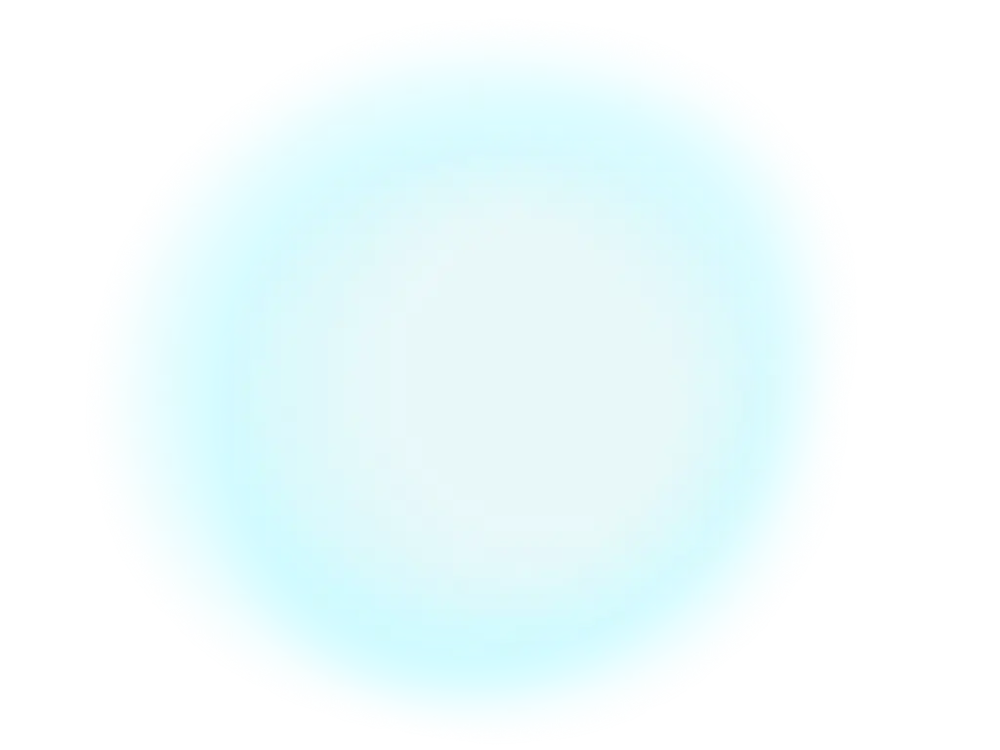
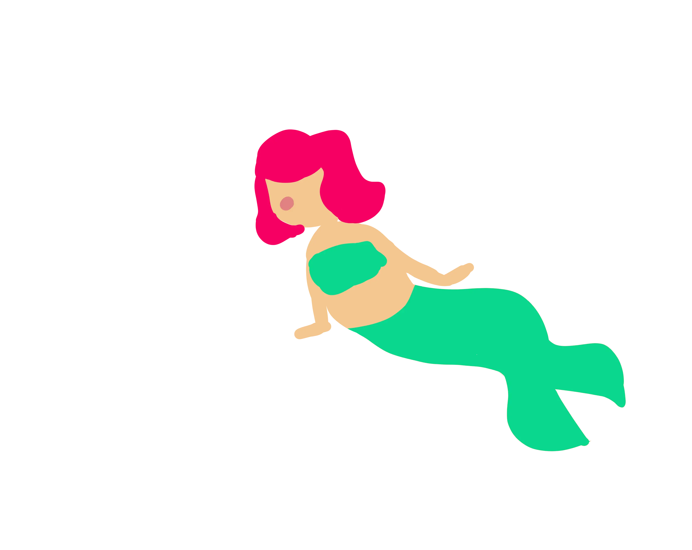
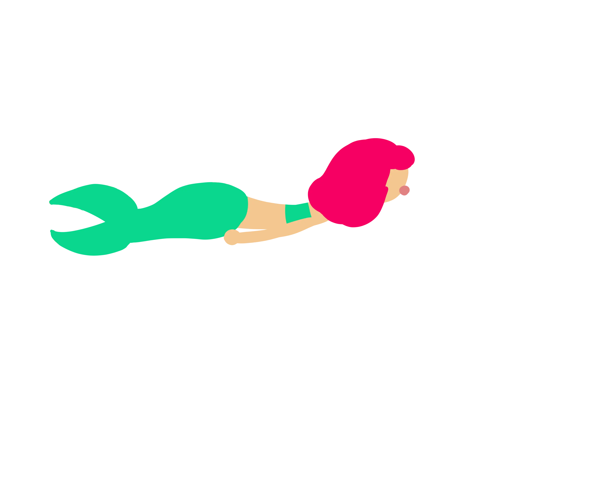

- anim sur les x
- rotation
- timeline
- sprite sheet
- scrollTrigger
- trigger= chapitre-1
- pin:true
- scrub:true
Il était une fois une jeune créature des mers nommé Billy. Nageant tranquillement et explorant les alentours et cherchant un poisson particulier, le poisson Blue, un poisson présumé magique qui exauce les vœux les plus chers de ces visiteurs s'ils le méritent.
Billy demande à un groupe de poisson s'ils veulent venir avec lui mais il l'écoute même pas et partent.
- anim sur les y
- anim sur le scale
- anim sur l'opacity
- timeline
- sprite sheet
- scrollTrigger
- trigger= chapitre-2
- pin:true
- scrub:true
Après plusieurs tentatives de trouver des partenaires il se retrouve seul accoté sur un rocher lorsqu'une lumière apparait devant lui.
Billy aperçoit un coffre au trésor.Le couvre s'ouvre et il apprecois un médaillon avec un paysage a l'intérieur fasciné par ce découvert d'un paysage colorer avec des cercles avec des anneaux il entend pas la personne qui est derrière lui.

- anim sur l'opacity
- timeline
- sprite sheet
- scrollTrigger
- trigger= chapitre-3
- pin:true
- scrub:true
-Bonjour! Dis une voix enjouée.
Billy retourne apeuré. Mais ne vois personne.
-C'est quoi qui a dans tes mains. Dis la voix.Billy fait maintenant face à une jolie sirène.
- Euh, je sais pas, je viens de le trouver, mais il y a quelque chose a l'intérieur regarde
-waw c'est cool, mais que fais-tu tout seul
-Euh, je n'ai pas vraiment d'amis avec qui jouer et personne ne veux être amis avec moi, car je suis bizarre.
-moi je veux être ton amie tu t'appelles comment? Moi c'est Lola et toi!
- OK veux-tu partir à la recherche du poisson Blue avec moi?
-Bien sûr pourquoi pas , dit Lola?

- anim sur les x
- paralaxe :texte, poisson et personnages
- timeline
- sprite sheet
- scrollTrigger
- trigger= chapitre-4
- pin:true
- scrub:true
Les nouveaux amis nagent tranquillement, quand Lola lui demande:
- Pourquoi cherches-tu le poisson bleu ?
-Je sais plus, dit-il en haussant les épaules, au début c'était pour avoir un ami, mais maintenant je sais plus. sûre pour l'aventure que je suppose.
-Bin moi j'aimerais bien pouvoir savoir ce qu'il y avait dans le médaillon sa m'intrigue
-Oui c'est une bonne idée.

- timeline
- scrollTrigger
- trigger= chapitre-2
- pin:true
- scrub:true
Après avoir traversé une forêt de hautes algues, un groupe de méduse, il se retrouve enfin devant la Grotte du poisson Blue:
-Prêt, dit Lola.
-Oui, dit Billy. »
Il rentre et se retrouve devant le poisson Blue qui est étonnamment plus petit qu'ils le pensaient.
- Bonjour, chers enfants, que puis-je faire pour vous aujourd'hui.
- Euh bonjour on aimerait savoir si vous pourriez exaucer notre vœu?
- Mais bien sur ,je vois que vous avez tous les deux on grand cœur et vous mérité d'avoir cette récompense,donc quel serais votre veux?
- on aimerais savoir ce qu'il y a dans le médaillon.
- ah je vous sa m'a l'air très intéressant, ceci jeune gens se nomme l'espace, là où tout est infini mystérieux et inexploré.
-ah ouais c vraiment intéressant savez-vous d'autre chose, dit Lola.
-mais bien sur je peux même vous montrer, dit Blue.
- DrawSVG
- morphsvg
- scrollTrigger
- trigger=
- chapitre-6
Soudain, le médaillon émet une lumière et le sol s'effondre sous leur pied et Billy et Lola se retrouve dans l'espace.
Billy est fasciné.- Waw, dit-il, c'est génial
- Effectivement,jeune homme.
- Dite messieurs, c'est quoi les trucs qui flotte là-bas.?
Billy et Lola continuent de parler au poisson. Billy passe un super bon moment sans savoir que son cadran va le réveiller dans 2 minutes.